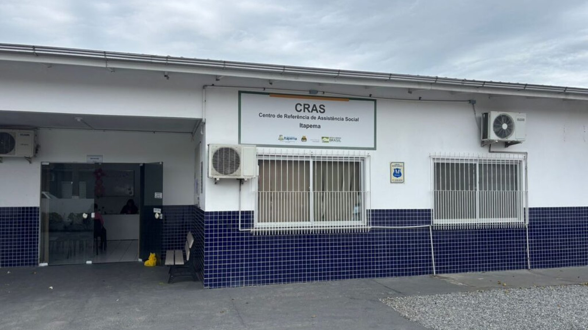
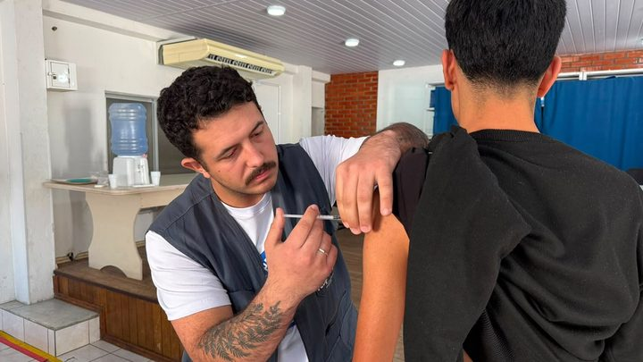

Itapema abre inscrição para 90 casas do Minha Casa, Minha Vida, e o prazo é de 60 dias
O programa para o qual esse cadastro serve, com o perfil exigido e o prazo.
São dois CRAS, treze bairros divididos entre eles e uma lista de documentos que precisa estar completa. Quem chega sem papel volta outro dia.
Em 30 segundos · Modo de Leitura, formato original Santa Informa
A Prefeitura de Itapema faz um atendimento especial de Cadastro Único, para atualizar cadastro e abrir cadastro novo, exclusivamente para moradores que vão participar do Cadastro Habitacional.
O atendimento é nos CRAS Morretes e CRAS Casa Branca, por ordem de chegada, das 8h às 11h e das 13h às 16h. As senhas saem a partir das 8h e das 13h.
É preciso levar os documentos originais de todos os moradores da casa. Falta de um papel derruba o cadastro inteiro, e a fila da casa própria depende dele.
Poder PúblicoPublicada em Redação Santa Informa

O Cadastro Único é a porta de entrada dos programas sociais do governo federal. É por ele que o poder público sabe quem mora na casa, quanto a família ganha e onde ela vive. Sem esse cadastro em dia, o nome não entra na seleção de programa habitacional. Por isso a Secretaria de Assistência Social montou um atendimento reservado para quem quer disputar casa.
O atendimento é por ordem de chegada, sem agendamento, em dois turnos: das 8h às 11h e das 13h às 16h. As senhas são distribuídas a partir das 8h para a manhã e a partir das 13h para a tarde.
O CRAS Morretes, na Rua 434, nº 1000, atende moradores do Jardim Praia Mar, Morretes, Meia Praia e Sertão do Trombudo. As dúvidas vão pelo WhatsApp (47) 99732-6770.
O CRAS Casa Branca, na Rua 816A, nº 160, atende Alto São Bento, Canto da Praia, Casa Branca, Centro, Ilhota, Sertãozinho, Tabuleiro dos Oliveiras, Várzea e Alto Areal. O WhatsApp para informação é (47) 93267-1465.
A lista vale para todos os integrantes da família, e os documentos precisam ser os originais: documento de identificação com foto em bom estado; título de eleitor de todos os adultos; certidão de nascimento ou de casamento de cada integrante; Carteira de Trabalho Digital impressa mais a última folha de pagamento, caso a carteira esteja assinada; comprovante de residência atualizado; e atestado de frequência escolar recente ou atestado de matrícula.
Vale separar tudo na véspera. Identidade rasgada ou desbotada costuma ser recusada no balcão, e comprovante de residência velho também.
Itapema abriu neste mês a inscrição para 90 unidades do Minha Casa, Minha Vida, com prazo de 60 dias. Contamos o desenho do programa quando a inscrição abriu. O CadÚnico é o degrau anterior a tudo isso: sem ele, não há como a família ser avaliada, por mais que se encaixe no perfil.
O resumo de 30 segundos está no topo e a versão completa é o texto acima. Aqui ficam as três leituras da casa sobre o mesmo assunto.
Clara, a otimista
Atendimento separado só para quem vai disputar casa é ideia boa. Quem já tentou atualizar CadÚnico em dia comum sabe que a fila mistura todo tipo de demanda, e a pessoa perde a manhã e volta sem resolver.
Dois CRAS abertos ao mesmo tempo, manhã e tarde, cobrem os treze bairros de uma vez. E o recado é simples: quem chegar com a papelada certa sai com o cadastro pronto no mesmo dia.
Seu Prudêncio, o criterioso
Vale acompanhar a divulgação da data. O aviso oficial diz sexta-feira e escreve 22 de agosto, e esse dia cai num sábado. Confusão de calendário em atendimento por ordem de chegada custa manhã de trabalho perdida para quem depende de ônibus.
Merece atenção a exigência de documento original de todos os integrantes da família. Certidão guardada em caixa de sapato, carteira de trabalho digital que precisa ser impressa e atestado escolar recente são justamente os papéis que faltam na hora. Uma sugestão útil seria a Prefeitura publicar a lista em formato de checklist para imprimir e aceitar o atestado escolar em versão digital no celular.
Feita a ressalva, concentrar o atendimento em quem está no processo habitacional é boa gestão. Reduz fila, organiza a demanda e evita que a família descubra o cadastro vencido só na hora da seleção. Isso conta.
Caco, o sarcástico
Documento original de todo mundo da casa. Se a sua família for parecida com a minha, isso significa achar a certidão de nascimento que a vó guardou num lugar muito seguro que ninguém lembra qual é.
Ordem de chegada às 8h em Itapema quer dizer 7h15 na porta. Aviso de amigo, não de jornal.
Piada à parte, cadastro atualizado é o que separa a pessoa da fila da casa própria. Vale a manhã.
Fontes: Prefeitura de Itapema e Secretaria de Assistência Social de Itapema.
O programa para o qual esse cadastro serve, com o perfil exigido e o prazo.

Itapema · SaúdeOutro serviço da semana com dia, hora e endereço marcados.
Atendimento por ordem de chegada funciona assim: quem chega cedo resolve.